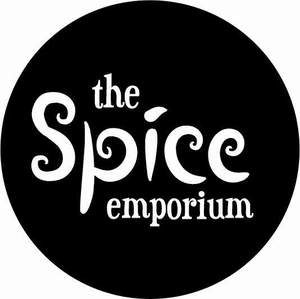

Trade Mark Journal No.2025/013 28 March 2025
UK00004171402 10 March 2025 (1,3,5,21,29,30,31)
Mark 1
THE SPICE EMPORIUM
Mark 2

- Class 1
- Flavour enhancers for foodstuffs; Aromatics [chemicals]; Chemical seasonings [for food manufacture].
- Class 3
- Aromatics for perfumes; Aromatics for fragrances.
- Class 5
- Medicinal herbs; Herbs (Medicinal -).
- Class 21
- Shakers for spices; Spice jars; Spice shakers; Spice racks.
- Class 29
- Cheese containing spices; Cooked sesame seeds, not being seasonings or flavorings; Preserved chopped chilli peppers, not being seasonings or flavorings; Spiced oils; Butter with herbs; Edible oils for use in cooking foodstuffs.
- Class 30
- Spices; Curry spices; Edible spices; Baking spices; Helichrysum [spices]; Helichrysum (spices); Marinades containing spices; Mixed spices; Bread flavored with spices; Bread flavoured with spices; Cardamom [spice]; Pizza spices; Salts, seasonings, flavourings and condiments; Crackers flavoured with spices; Flavorings and seasonings; Flavourings and seasonings; Cloves [spice]; Seasonings; Peppers [seasonings]; Nutmegs [spice]; Pepper spice; Sumac [spice]; Cinnamon [spice]; Curry [spice]; Chili oils being condiments; Chili seasonings; Curry spice mixes; Spices in the form of powders; Ginger [spice]; Ginger [powdered spice]; Cinnamon powder [spice]; Pepper powder [spice]; Savory sauces used as condiments; Blends of seasonings; Food seasonings; Clove powder [spice]; Spice preparations; Curry powder [spice]; Processed ginseng used as a herb, spice or flavoring; Chili pepper pastes being condiments; Dried coriander for use as seasoning; Marinades containing seasonings; Saffron salt for seasoning food; Saffron for use as a seasoning; Saffron [seasoning]; Aniseeds for use as a seasoning; Chemical seasonings [cooking]; Garden herbs, preserved [seasonings]; Preserved garden herbs as seasonings; Pepper sauces; Sesame seeds [seasonings]; Spice mixes; Mustard powder [spice]; Chutneys [condiments]; Dried coriander seeds for use as seasoning; Sauces [condiments]; Coffee flavorings [flavourings]; Marinades containing herbs; Spice rubs; Turmeric powders for use as a condiment; Extracts of cocoa for use as flavours in foodstuffs; Sichuan peppers being condiments; Chili oil for use as a seasoning or condiment; Spice extracts; Dry seasonings; Dried chili peppers seasoning; Savory sauces, chutneys and pastes; Spicy sauces; Hot pepper powder [spice]; Allspice; Flavourings for foods; Culinary herbs; Herb sauces; Condiments; Crackers flavoured with herbs; Seasoning mixes for stews; Curry [seasoning]; Seafood flavoured condiments; Curry sauces; Extracts of coffee for use as flavours in foodstuffs; Turmeric for use as a condiment; Savory sauces; Sumac for use as a seasoning; Flavourings of lemons, other than essential oils, for food or beverages; Dried herbs; Frozen prepared rice with seasonings and vegetables; Dry seasoning mixes for stews; Caraway seeds for use as a seasoning; Seasonings for instant-boiled mutton; Spiced salt; Mixed spice powder; Salt for flavouring food; Smoke distillates from wood for flavouring foodstuffs; Processed hemp seeds [seasonings]; Chili seasoning; Vanilla flavourings for food or beverages; Processed squash seeds [seasonings]; Pickling salt for pickling foodstuffs; Sauces flavoured with nuts; Thickeners for cooking foodstuffs; Flavourings for soups; Cooking sauces; Vanilla flavorings; Coffee flavorings; Flavourings of almond, other than essential oils, for food or beverages; Aromatic teas [other than for medicinal use]; Roasted and ground sesame seeds for use as a seasoning; Flavourings for snack foods [other than essential oils]; Dried cumin seeds; Savoury sauces; Aromatic preparations for candies; Taco seasonings; Flavorings for beverages; Alimentary seasonings; Chutneys [condiment]; Fruit flavourings for food or beverages, except essences; Vanilla flavorings for culinary purposes; Flavourings of lemons for food or beverages; Dried herbs for culinary purposes; Japanese pepper powder spice (sansho powder); Vegetable-based seasonings for pasta; Dry condiments; Sauces for rice; Ginger puree [condiment]; Processed seeds used as a flavoring for foods and beverages; Food flavourings.
- Class 31
- Fresh fruits, nuts, vegetables and herbs; Fresh culinary herbs; Culinary herbs (Fresh -); Dried herbs for decoration; Herbs, dried, for decoration.
ANGLO EUROPEAN COMMODITY BROKERS LIMITED